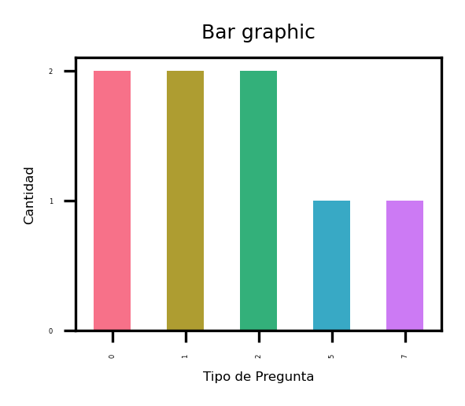

This bar graph shows the quantities by type of questions, the types of questions try to group the queries made by people interested in knowing the work experience of Jorge Eduardo Vicente Hernández, this graph has the purpose of identifying what is most interested headhunters or people looking for resources with technical computing capabilities.
|  |
This is the legend of the bar graph by question type, below the types:
0: About Jorge Vicente
1: Professional experience
2: Contact Information
3: Studies and education completed
4: Certifications
5: Technical skills
6: Languages
7: Data analysis and Data science
8: experience in artificial intelligence
9: experience in computer vision
10: experience in chatbots
11: Why you say chapapapa?
12: talk about other things